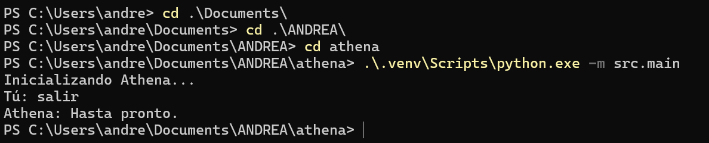

EPANET

Proyecto universitario en colaboración con HPE para analizar y predecir la demanda eléctrica en España. Desarrollé la página web y participé en otras tareas del equipo.
Ver la ficha de EPANETEstudiante del Doble Grado en Ingeniería Matemática Aplicada al Análisis de Datos e Ingeniería Informática, con interés en la inteligencia artificial.
Estoy cursando el Doble Grado en Ingeniería Matemática Aplicada al Análisis de Datos e Ingeniería Informática en la Universidad Europea de Madrid. Me interesa especialmente la inteligencia artificial y su relación con el análisis de datos.
He participado en proyectos universitarios con HPE sobre demanda eléctrica y accidentalidad en Madrid. También he desarrollado La Despensa, una aplicación en Java, y trabajo en Athena, mi proyecto personal de asistente en Python.
| Centro | Titulación | Años |
|---|---|---|
| Universidad Europea de Madrid | Doble Grado en Ingeniería Matemática Aplicada al Análisis de Datos e Ingeniería Informática | 2022-2027 |
| En curso. Finalización prevista en 2027. | ||
Proyecto universitario en colaboración con HPE para analizar y predecir la demanda eléctrica en España. Desarrollé la página web y participé en otras tareas del equipo.
Ver la ficha de EPANET
Proyecto universitario en colaboración con HPE sobre accidentalidad en Madrid. Participé en la limpieza y preparación de datos con Python y Jupyter Notebook.
Ver la ficha de accidentalidadEn curso

Proyecto personal de un asistente en Python que permite guardar recuerdos y gestionar tareas desde la terminal. Participé en su diseño, programación, pruebas y revisión.
Ver la ficha de Athena